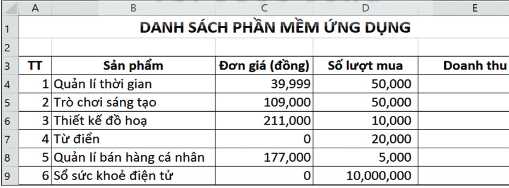
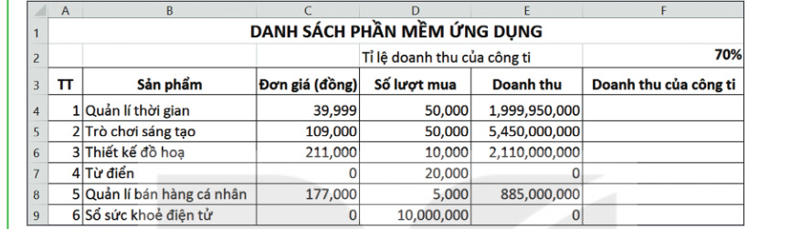

Dành cho giáo viên
Theo dõi lớp
| Học sinh / Nhóm | Đã nộp | Cập nhật |
|---|
Bước 1
1 Khởi động
Khởi động Danh sách phần mềm ứng dụng
Bố của Khoa là giám đốc một công ti sản xuất phần mềm máy tính. Để giúp Khoa ôn lại kiến thức và tìm hiểu thêm về phần mềm bảng tính, bố giao cho Khoa tính toán doanh thu một số phần mềm mà công ti của bố sản xuất. Những phần mềm này được đưa lên các chợ ứng dụng trên mạng. Tuỳ theo từng phần mềm, người sử dụng có thể phải trả phí hoặc được miễn phí. Khoa đã tạo bảng tính để lưu thông tin về các phần mềm như minh hoạ trong Hình 5.1.

Ghi bài Khởi động
Sau khi thầy cô chốt, em chép nội dung dưới đây vào vở.
Bước 2 · Hình thành kiến thức mới
2.1 Địa chỉ tương đối
Hoạt động 1 Tính doanh thu phần mềm
Dựa vào thông tin mà bạn Khoa đã lưu trữ trong bảng tính ở Hình 5.1 (đơn giá bằng 0 là phần mềm miễn phí). Đọc mục 1 (SGK trang 22): chương trình bảng tính sử dụng ba loại địa chỉ ô là địa chỉ tương đối, địa chỉ tuyệt đối và địa chỉ hỗn hợp. Trong Hình 5.2, công thức tại ô E4 là =C4*D4. Khi sao chép công thức này đến ô E5 thì các địa chỉ ô trong công thức sẽ tự động thay đổi: công thức tại ô E5 là =C5*D5. Các địa chỉ C4, D4, C5, D5 là địa chỉ tương đối.
Mô phỏng sao chép công thức
→
Thử nhanh:
Câu hỏi SGK trang 22
Ghi bài 1. Địa chỉ tương đối
Sau khi thầy cô chốt, em chép nội dung dưới đây vào vở.
Bước 2 · Hình thành kiến thức mới
2.2 Địa chỉ tuyệt đối
Hoạt động 2 Địa chỉ tuyệt đối
Bạn Khoa đã tính được Doanh thu của mỗi phần mềm. Doanh thu là số tiền thu được của đơn vị quản lí chợ ứng dụng khi người sử dụng trả tiền mua phần mềm. Công ti của bố Khoa được trả 70% của số tiền này và gọi là Doanh thu của công ti. Giả sử tỉ lệ phần trăm doanh thu mà công ti được hưởng lưu ở ô F2 (Hình 5.3).
Đọc mục 2 (SGK trang 23): trong chương trình bảng tính, một địa chỉ ô trong công thức không thay đổi khi sao chép công thức thì địa chỉ đó là địa chỉ tuyệt đối. Địa chỉ tuyệt đối có kí hiệu $ trước tên cột và trước tên hàng, ví dụ $F$2. Sau khi nhập địa chỉ tương đối, em nhấn phím F4 để chuyển thành địa chỉ tuyệt đối. Em có thể dùng bảng mô phỏng ở mục 1 để thử sao chép công thức có địa chỉ tuyệt đối.
Đọc mục 2 (SGK trang 23): trong chương trình bảng tính, một địa chỉ ô trong công thức không thay đổi khi sao chép công thức thì địa chỉ đó là địa chỉ tuyệt đối. Địa chỉ tuyệt đối có kí hiệu $ trước tên cột và trước tên hàng, ví dụ $F$2. Sau khi nhập địa chỉ tương đối, em nhấn phím F4 để chuyển thành địa chỉ tuyệt đối. Em có thể dùng bảng mô phỏng ở mục 1 để thử sao chép công thức có địa chỉ tuyệt đối.

Câu hỏi SGK trang 24
Ghi bài 2. Địa chỉ tuyệt đối
Sau khi thầy cô chốt, em chép nội dung dưới đây vào vở.
Bước 2 · Thực hành
2.3 Thực hành
Thực hành 3 Sử dụng bảng tính giải quyết bài toán thực tế
Nhiệm vụ: tạo bảng tính theo mẫu Hình 5.1. Lập công thức sử dụng địa chỉ tương đối và địa chỉ tuyệt đối để tính Doanh thu mỗi phần mềm và Doanh thu của công ti.
- a) Khởi động phần mềm bảng tính, nhập dữ liệu và định dạng như Hình 5.1, lưu tệp.
- b) Tại ô E4 nhập =C4*D4, sao chép đến các ô E5 đến E9.
- c) Tại ô D2 nhập “Tỉ lệ doanh thu của công ti”, tại ô F2 nhập 70%; tại ô F3 nhập tiêu đề “Doanh thu của công ti”; tại ô F4 nhập =E4*$F$2 (nhập $ từ bàn phím hoặc nhấn F4 sau khi nhập F2); sao chép đến F5:F9; lưu tệp.
Thực hành 4 Sao chép dữ liệu từ các tệp văn bản, trang trình chiếu sang trang tính
Giả sử kết quả số học sinh chọn mỗi nhóm nghề của lĩnh vực Công nghệ thông tin được lưu trữ trong phần mềm soạn thảo văn bản hoặc phần mềm trình chiếu như Bảng 5.1. Em hãy sao chép bảng số liệu này sang phần mềm bảng tính.
| TT | Nhóm nghề | Nghề | Số lượng HS |
|---|---|---|---|
| 1 | Lĩnh vực phát triển phần mềm | Lập trình viên, Thiết kế phần mềm, Kiến trúc sư phần mềm, Kiểm thử phần mềm,… | 46 |
| 2 | Lĩnh vực mạng máy tính và an toàn thông tin | Quản trị mạng, An toàn thông tin,… | 25 |
| 3 | Lĩnh vực đa phương tiện | Thiết kế đồ hoạ, truyền thông đa phương tiện | 78 |
| 4 | Lĩnh vực khác của Công nghệ thông tin | Quản trị website, giảng viên Công nghệ thông tin,… | 42 |
Ghi bài 3, 4. Thực hành
Sau khi thầy cô chốt, em chép nội dung dưới đây vào vở.
Bước 3
3 Luyện tập
Luyện tập Bài tập SGK trang 26
Câu 2. Nhân dịp khai giảng năm học mới, tại một số cửa hàng, nhà sách,… các mặt hàng đồ dùng học tập được giảm giá. Bảng tính “Danh sách các mặt hàng được giảm giá” (Hình 5.7) có: ô D2 lưu tỉ lệ giảm giá 20%; các cột TT (A), Tên mặt hàng (B), Đơn giá (C), Đơn giá đã giảm (D); dữ liệu từ hàng 5 đến hàng 10 (vở 80 trang, vở 120 trang, bút bi, bút chì, balo, cặp sách). Em hãy nhập dữ liệu, tìm đơn giá các mặt hàng rồi làm các yêu cầu c), d), e), f).
Ghi bài Luyện tập
Sau khi thầy cô chốt, em chép nội dung dưới đây vào vở.
Bước 4
4 Vận dụng
Vận dụng Doanh thu phần mềm trên chợ ứng dụng
Ghi bài Vận dụng
Sau khi thầy cô chốt, em chép nội dung dưới đây vào vở.